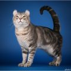

 Американский керл – порода котов, отличающихся от других своими завернутыми наружу ушами. Такие ушки с отворотами придают им вечно радостный и немного настороженный вид. Особенности разведения и ухода за американским керлом также определяются их уникальным строением ушей. История происхождения американский керл фото Как ясно из самого названия породы, ее родина – США. История американского керла берет начало в 1981 года в Лейквуде, Калифорния. Тамошние жители по фамилии Руга нашли черного котенка с необычными ушками. Это оказалась девочка – ее назвали Суламифь. Через полгода в ее первом помете из 4-х котят двое родились с такими же завернутыми ушами. С 1983 года селекцией уникального гена начали заниматься профессиональные заводчики. Породой заинтересовался даже известный английский фелинолог-генетик Рой Робинсон. Он изучил 383 котенка из 81 помета и подтвердил, что ген закрученых ушей уникален. Чем-то порода похожа на сибирскую породу кошек. Описание породы американский керл американский керл Американский керл – это первая порода, которую организация CFA признала в виде как длинношерстных, так и короткошерстных кошек. Тем не менее, стандарт породы содержит детальное описание строения тела и особенно ушей: Голова – форма модифицрованного клина, длина морды примерно в 1,2 раза больше ширины, твердый подбородок, паралелльный верхней губе и носу; плавный переход от носа к переносице и лбу. Уши – должны выглядеть эстетично, широкие у основания и умеренно большие, открытые. Расположены в равной степени на верху и боках головы. Минимальная степень заворота – 90 градусов, при этом закручиваться должен кончик – не более 1/3 всего уха. Поверхность изогнутой части гладкая, концы закруглены и гибкие, желательно с небольшими кисточками. Глаза – форма грецкого ореха, овальные сверху и закругленные снизу, умеренно большие, посажены широко, под небольшим углом между основанием ушей и кончиком носа. Цвет чистый и яркий, может не соответствовать окрасу, однако у пятнистых кошек должны быть голубые глаза. Тело – прямоугольной формы, длина примерно в 1,2 раза больше высоты в плечах. Лапы – средней длины, пропорциональны телу, закруглены на подушечках. Хвост – гибкий, широкий в основании и сужающийся к концу, равен длине тела. Шерсть – мягкая, шелковистая, лежит вдоль тела; может быть короткой по всему телу и хвосту, а может — полудлинной с пушистым хвостом с плюмажем. Минимальный подшерсток. кошка породы американский керл Кошки породы американский керл имеют средние размеры и вес в 2,5-5 кг. Они достигают зрелости к 2-3 годам. Котенок американского керла рождается с прямыми ушами. Они начинаются закручиваться в течение первых двух месяцев (обычно уже на 3-5 день) и окончательно формируются к 4 месяцам. После этого срока ушные хрящики затвердевают. Взрослый американский керл может быть и с прямыми ушами, но это считается отклонением от стандарта. При участии в выставках и соревнованиях это главные признаки отличия породы. Потому угол заворота ушей должен быть от 90 до 180 градусов. Чем больше, тем лучше, но кончики не должны касаться головы.